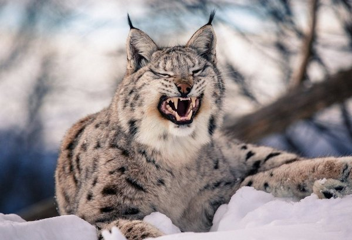
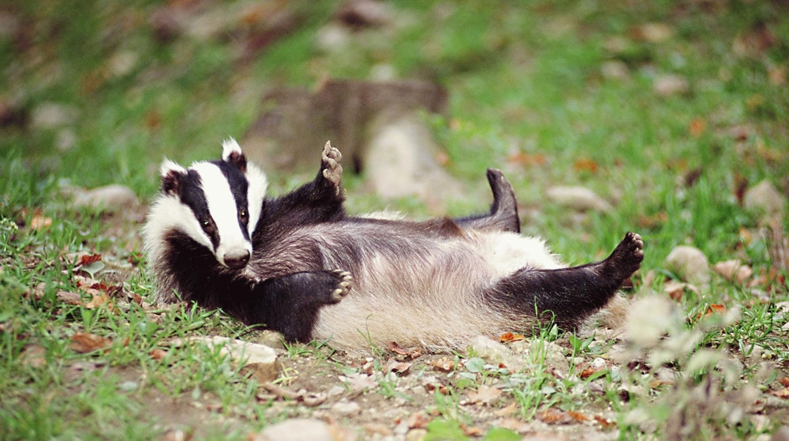

Рись

Велика, дика і дуже хижа кішка, що мешкає в лісах.
Довжина тіла рисі в середньому становить від 80 до 130 см.
Вага рисі, якщо це самець становить від 18 до 25 кг, самки трохи менше
і відповідно легше, їх вага зазвичай 17-18 кг. Тулуб у цього звіра короткий
і щільний. В наявності, як і у всіх котячих хвіст, правда, хвіст рисі, зазвичай з обрубленим кінцем.
Вуха рисі прикрашені пухнастими китицями. Також у цих «кішок» є подовжувальна
шерсть на бороді, що створює таку собі подобу бакенбард. Морда рисі кругла
і невелика, а от очі в неї великого розміру, до того ж з вертикальними зіницями.
Зір у неї дуже хороший, до того ж рись здатна бачити в темряві, теж можна сказати про
слух і нюх, всі ці органи почуттів у рисей розвинені так само добре, як у
звичайних кішок. Шерсть у рисі густа, шовковиста і красива.
Великі і пухнасті лапи дають відмінну можливість тварині взимку
пересуватися по снігу. Забарвлення рисі змінюється в залежності від
її виду та місця проживання, від рудого до темно-бурого.
Як ми писали трохи вище, рись в якості місць проживання воліє глухі ліси.
Тайга – ідеальне місце для рисі. Всі рисі вміють чудово лазити по деревах,
добре плавають. Плямисте забарвлення рисі сприяє її маскуванню. Ці тварини
ведуть одиночний спосіб життя, максимум парами самець + самка, в чому
програють своїм конкурентам вовкам.
У пошуках їжі рись може пройти до 30 км в день.
На полювання вони виходять в сутінках, підстерігаючи потенційну здобич
у засідці, потім роблячи різкий ривок – швидкість рисі під час стрімкого
ривку може досягати до 40 км на годину. Цікаво, що рись не дуже боїться людей,
і цілком може напасти, у тому числі на людину, але тільки у випадку
дуже сильної її наполегливості та безпечності, зазвичай воліє таки іншу
лісову дичину
Барсук

Найбільший представник сімейства куньих у Білорусі.
Маса тіла дорослих самців становить від 6 до 22 кг, дорослих самок від 5
до 20 кг. Такий великий розкид пов'язаний із сезонною мінливістю маси
тіла, оскільки борсуки сильно жиріють восени. На початок зимівлі борсуки
сильно жиріють, маса лише підшкірного жиру становить 20-35% маси тіла.
Влітку ж маса дорослих особин зазвичай вбирається у 12 кг, а середньому
становить 8-10 кг. Довжина тіла дорослих самців становить 55-90 см (в середньому
72-75 см), дорослих самок до 80 см (в середньому 65-70 см). Довжина хвоста 12-19
см; ступні 9-13 см; вуха 5-7 см.Вуха дуже маленькі, округлі, діаметром близько
3 см. Очі маленькі. Форма тіла майже клиноподібна. Тулуб масивний, широкий ззаду
і звужується до голови. Морда вузька, витягнута, шия коротка. Ноги короткі,
сильні, причому передні дещо більші за задні. Лапи з довгими притупленими кігтями,
добре пристосовані до копання. При ходьбі, як і ведмідь, ступає на всюступню.
Волосяний покрив у різних частинах тіла порівняно різноманітний. На спині і
боках він складається з високої, грубої, але рідкісної остюки і рідкісного
м'якого підпушка. Довжина остевого волосся на середині спини становить 7,0-8,0 см.
Черево вкрите коротким і рідким волоссям, причому в пахвинах він розташований
так рідко, що добре помітна шкіра. На голові волосяний покрив короткий, досить
густий і добре покладений. Хвіст в основному покритий довгим остовим волоссям.
Барсук — один із найактивніших перетворювачів середовища у
тваринному світі. Він риє складні за будовою нори, при цьому впливає як на
ґрунт, так і на організми, що мешкають у ньому. Місця з великою кількістю
нір відрізняються від місць, де таких нір немає або вони поодинокі.
Тут починають рости інші види рослин, збільшується мозаїчність біогеоценозу.
Барсучі нори часто використовують лисиці, єнотоподібні собаки та інші види
тварин, як притулок від несприятливих природних умов, так і для розмноження